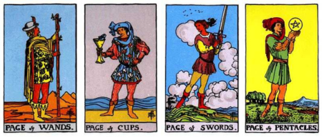

The Lovers (VI) card is the archetypal symbol of choice, relationship, and the harmonious synthesis of duality. This chapter moves beyond rote memorization of single card meanings to the art of synthesizing the complex tapestry of a spread. Mastery is not knowing what a card means, but knowing what it says in conversation with the cards around it.
Every card in a spread is talking to its neighbor. The pairing of two adjacent cards forms the basic unit of narrative synthesis, revealing a complex, nuanced concept far beyond their individual meanings.
When reading two adjacent cards, look for these three types of relationships:
The relationship between cards is defined by their structural properties:
A complete spread is a linear or cyclic story with a definite beginning, middle, and end. The positions are not simply labels; they are chapters in the querent's journey.
Every spread should be read to identify the Five of the Situation—the central challenge that must be overcome. This is the fulcrum upon which the rest of the reading turns.
In any spread of five cards or more, there is an arc of change that can be mapped onto the three phases of alchemy:
Equally important to the cards drawn is the energy that is absent. A sophisticated synthesis requires identifying what is not present to complete the picture.
| Missing Number | Archetype of Absence | Interpretive Significance (The Void) |
|---|---|---|
| One (Aces) | Will, New Start | The querent is avoiding initiating a new action. They have the energy but lack the courage or focus to start. The issue is stagnation due to fear of the unknown. |
| Two | Choice, Partnership | The querent is resisting making a definitive choice or committing to a partnership. The situation is stalled by indecision or a refusal to see the opposing viewpoint. |
| Three | Creation, Expansion | The potential is there, but there is no output or tangible growth. The querent is struggling to collaborate, communicate, or realize the initial idea. |
| Four | Stability, Rest | The situation lacks structure and foundation. The querent may be overwhelmed or unable to establish boundaries. The need is for rest and the creation of reliable systems. |
| Five | Conflict, Change | The querent or situation is avoiding necessary conflict. The problem is being politely ignored, meaning the issue will fester until a forced upheaval occurs. |
| Six | Harmony, Generosity | The querent is unable to find balance or reconciliation. They may be holding onto grudges or refusing to give/receive support. The void highlights a need for forgiveness and integration. |
| Seven | Introspection, Faith | The querent is too focused on the external world, lacking inner reflection or spiritual faith. They must be advised to withdraw and look for the solution within themselves. |
| Eight | Mastery, Action | The querent has the knowledge and vision but is failing at practical application and execution. The need is to get organized and put the work in to achieve mastery. |
| Nine | Fulfillment, Climax | The querent is constantly stopping just short of the goal. They struggle to find true fulfillment or recognize their own success, leading to perpetual unfinished business. |
| Ten | Conclusion, Endings | The querent is unable to achieve closure or release an established burden. They may be clinging to a painful past and preventing the natural start of a new cycle. |
This section focuses on using the reading to analyze two or more separate entities (people, choices, paths). This directly applies to the synthesis of The Lovers card.
For comparing two paths, physically divide a spread into two separate sections, assigning one card to each path for each position (e.g., two cards for "Immediate Challenge," one for Path A, one for Path B).
When dealing with a relationship question, the cards reveal the blend of energies between two people.
The final step is to merge the structural analysis (Chapter IV) with the narrative arc (Chapter V) to deliver a single, cohesive message that is ethical and empowering.
For the most complex spreads, use the three most powerful data points to confirm the overall theme:
These three points must be reconciled into one statement. (Example: The queen is embodying the King of Swords (Significator), the outcome is The Star (Future), and the overall theme is Conflict (Five). Synthesis: Your intellectual authority (King) is currently causing conflict (Five), but if you maintain your integrity, it will lead to calm, detached hope (The Star).
The reading must culminate in an empowering, actionable message (revisiting the lessons of Chapter III):
This is an excellent idea for deepening the ethical delivery model. Matching the tone of the reading to its dominant archetypal energy makes the advice immediately more impactful and resonant for the client.
Synthesis is complete only when it is effectively and ethically delivered. The tone must match the gravity and energy of the cards to ensure the client receives the message in the most receptive way. This technique leverages the archetypes of Major Arcana as the Oracle's voice.
Dominance: Major Arcana focused on structure and control (e.g., The Emperor, Justice, The Tower, Judgement); action-oriented suits (Wands and Swords); or the Knight rank.
Tone: Direct, Strategic, Authoritative. This voice cuts through emotional clutter to deliver clear, executable directives. It is used when the client needs strong boundaries and decisive action.
| Key Tone Markers | Strategic Intent | When to Use |
|---|---|---|
| Directive Phrases: "You must establish firm boundaries here," "The strategic imperative is..." "Your core task is to focus your will." | To Impose Structure: Creates a sense of control and reduces anxiety by defining a clear plan of attack. | When the querent is overwhelmed by chaos or paralyzed by inaction, the cards show a need for discipline or leadership. |
| Structural Language: Use words like mandate, authority, control, discipline, structure, and objective. | To Center Logic: Frames the problem as one of logistics and power dynamics, removing emotional subjectivity. | When the reading contains many Swords or Major Arcana that demand a clear, documented choice. |
| Ethical Focus: Accountability, self-mastery. | The client needs to take unambiguous, intentional steps to manage a professional or external conflict. | When the querent is avoiding responsibility, deflecting blame, or the cards highlight a need for moral clarity, integrity, or personal growth in order to resolve the situation. |
Dominance: Major Arcana focused on the inner world (e.g., The High Priestess, The Hermit, The Moon); emotional suits (Cups); or the number Seven (introspection).
Tone: Empathetic, Intuitive, Suggestive. This voice encourages the client to look inward, validating their emotional experience without imposing a logical solution. It emphasizes listening over doing.
| Key Tone Markers | Strategic Intent | When to Use |
|---|---|---|
| Reflective Phrases: "Listen to your intuition; the answer is already within," "The feeling is that..." "I advise you to withdraw to find clarity." | To Validate Inner Truth: Shifts the focus from external pressure to internal wisdom, validating deep feelings and fears. | When the client is highly emotional, confused, or suffering from a lack of emotional clarity (many Cups or The Moon). |
| Subconscious Language: Use words like intuitive, subconscious, dream, flow, mystery, and reflection. | To Reduce Anxiety: Encourages patience and a non-action approach, suggesting that time and inner work will reveal the path naturally. | When the reading shows a need for healing, recovery, or spiritual alignment, an aggressive action would be counterproductive |
| Ethical Focus: Patience, inner truth. | The client needs to stop pushing against circumstances and instead allow the truth to surface organically. | When the querent is forcing clarity, seeking external validation, or the cards indicate that insight will emerge only through stillness, intuition, or emotional processing rather than action. |
Dominance: Major Arcana focused on knowledge and tradition (e.g., The Hierophant, Temperance); material suits (Pentacles); or the number Four (stability/structure).
Tone: Practical, Moral, Procedural. This voice anchors the message in reality, focusing on what is socially accepted, financially responsible, or structurally sound. It provides guidance based on proven methods.
| Key Tone Markers | Strategic Intent | When to Use |
|---|---|---|
| Procedural Phrases: "The established process dictates that..." "I strongly suggest you seek wise counsel," "Your first step must be to stabilize the material foundation." | To Ground Reality: Brings abstract energy down to concrete, tangible steps related to money, career, or routine. | When the client's problem is entirely practical, financial, or related to legal/social systems (many Pentacles or Fours). |
| Traditional Language: Use words like procedure, counsel, security, protocol, ethics, value, and foundation. | To Encourage Reliability: Directs the client toward time-tested solutions rather than risky, impulsive moves. | When the reading shows a need for formal training, financial planning, or adherence to an ethical code. |
| Ethical Focus: Integrity, responsibility. | The client needs a message that connects their actions to their long-term stability and reputation. | When the querent is facing a moral crossroads, must choose the responsible or socially accountable path, or the cards highlight consequences tied to reputation, duty, or long‑term commitments. |